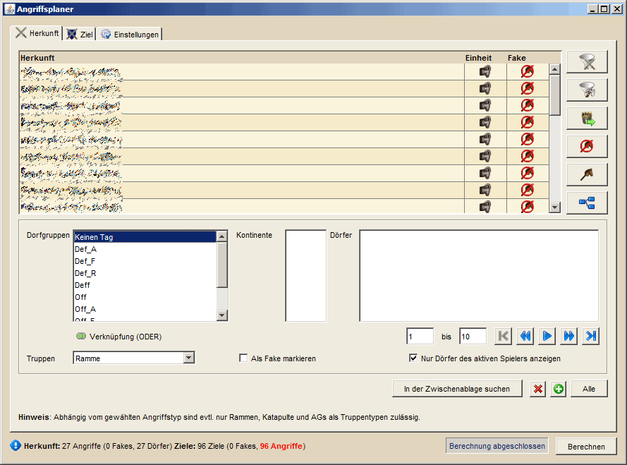

Angriffsplaner - Herkunft |
||
|  | ||
In diesem Tab kannst du eigene Dörfer ausgewählt, die du für deinen Angriff verwenden möchtest. Im mittleren Bereich findest du deine Gruppen, die Kontinente auf denen die Dörfer der gewählten Gruppe liegen und die Dörfer selbst. Wähle Gruppen und Kontinente so aus wie du möchtest und markiere alle Dörfer die du verwenden möchtest. Klickst du ein Element in der Dorfliste an, so kannst du per STRG+A alle Dörfer der Dorfliste wählen. Unter der Dorfliste hast du darüber hinaus die Möglichkeit, einzelne Blöcke von Dörfern zu wählen und durch diese Blöcke zu navigieren. Ist deine Auswahl komplett so kannst du dir gewählten Dörfer mit gedrückter linker Maustaste in die Tabelle ziehen. Nun werden die Dörfer als Herkunftsdörfer eingefügt, wobei die langsamste Einheit verwendet wird die unter der Dorfliste angegeben wird. Ist das Feld 'Als Fake markieren' aktiv, so werden aus den eingefügten Herkunftsdörfern Fakes geplant. |
||
Sonderfunktionen |
||
 |
||
Über den ersten Button der Kategorie "Sonstiges" im Menü erhält man die Möglichkeit, Angriffe nach Truppenzahlen aufzusplitten. Dies ist im Zusammenhang mit der Funktion "Unterstützung auffüllen" in der Truppenübersicht eine sehr nützliche Funktion die es erlaubt, Unterstützungen in sehr kleinen Paketen zu planen, um Rekrutierungszeiten gering zu halten. Klickt man den Button erscheint der Dialog wie man ihn oben sehen kann. Oben links sind die Dörfer aus der Herkunftstabelle gelistet. Darunter kann man einstellen, welche Truppen in welcher Anzahl in einem Split enthalten sein sollen. Tragt einfach die Menge ein, wählt die Einheit und klickt den Button daneben, um einen Eintrag hinzuzufügen. Die Dorfliste oben wird sich entsprechend der möglichen Splits für das jeweilige Dorf aktualisieren. Auf der rechten Seite gibt es noch die Möglichkeit, einzelne Splits zu speichern. Gebt dafür einen Namen für den Split an und klickt auf den linken Button um ihn zu speichern. Das Laden funktioniert über den rechten Button, für das Löschen ist wieder ENTF zuständig. |
||
| Wenn ihr mit dem Truppen splitten arbeitet solltet ihr beim späteren Übertragen der Angriffe per Angriffsübersicht in den Browser unbedingt darauf achten, dass die dort verwendeten Einträge der Standardangriffe der Anzahl eurer angegebenen Split-Menge entspricht, da euch sonst unter Umständen recht schnell die Truppen beim Übertragen in den Browser ausgehen und ein Verteidigungsplan schnell mal scheitert. | ||